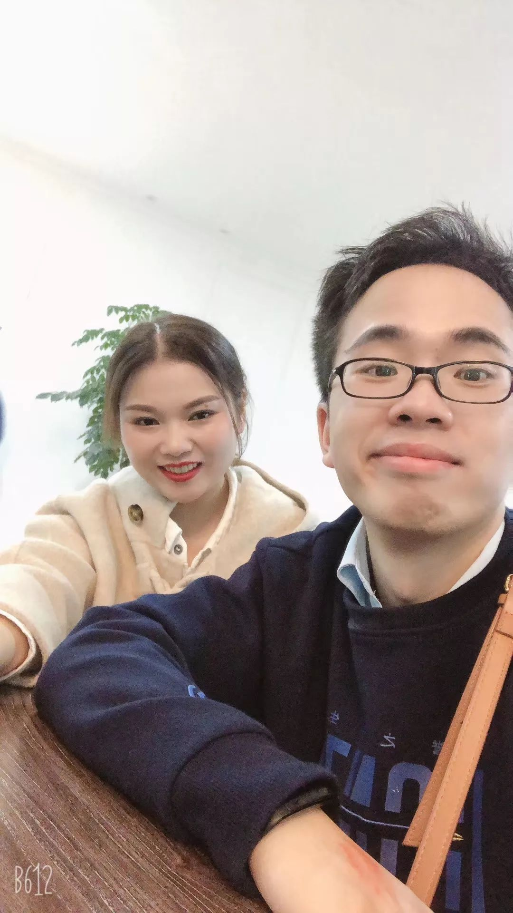
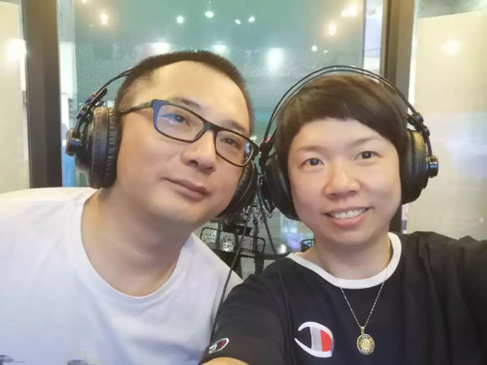

疫情时期的爱情
原文链接 备份链接 爱情始终是爱情，距离生死越近，爱就越浓郁。新冠肺炎疫情，强行打断了时间的连接，在隔离、空白和生死间，将日常生活的本质的呈现出来。疫情时期的爱情，与此前此后都是不一样的。 封城前，他花了三个小时买回来一个蛋糕 2月2 …

摘要：这是几对医护夫妻的故事。他们有的结婚超过十年，有的还没来得及举办婚礼。他们在同一栋楼里工作，却很少见面，或者因为穿着防护服，差点没认出彼此。情人节这天，他准备了一盒费列罗巧克力，但为了避免传染的风险，隔着十米远放在地上。这一天不再需要鲜花，电影，亲吻和拥抱。这就是爱在疫情下展现的模样。
文 | 程静之 殷盛琳
编辑 | 王珊
事实上，人们在情人节这天说过很多谎言。电影的票根、餐厅的灯光、酒吧的烟味，很快都会被忘记。而现在，席卷全国的疫情让“永远”的承诺看起来可信了那么一些。
2020年情人节注定成为无数爱人们一生中最难忘的回忆之一。爱情、爱人、相守，每一个词都有了更深的意味。
一对医生夫妻在病房前偶遇，穿着防护服，差点没认出彼此；一对夫妻在同一栋楼里工作，却很少见面，情人节的电话里，只是挂念彼此不被感染；一对不久前领完结婚证的恋人，已经很久没见，丈夫准备了一盒费列罗巧克力，为避免传染的风险，他只能隔着十米远放在地上，等他走了妻子再去拿。
这是爱情在疫情下展现的模样。它不限于一张法律上的证明，也不限于任何节日。它没有边角，也无法丈量。
《霍乱时期的爱情》里，德圣阿莫尔在60岁时告别爱人说，请以一支玫瑰纪念我。如今，天知道爱人们多么想用此名句，告别蔓延的疫情。
以下是四位医护人员的口述：
一盒费列罗巧克力
郭春飞29岁 湖北荆州市第一人民医院 耳鼻喉科医生 结婚两个月
我是荆州市第一人民医院的一名耳鼻喉科医生，我爱人谢倩是中医院心病科的一名护士。算起来我们是闪婚，2019年3月份的时候，我们才刚刚认识，她有过敏性鼻炎，正好到我们医院看病，我接的诊。然后就一起聊天，互有好感，一来二去就约出来见了面。我记得是先去看了场电影，一个什么港片，然后吃了饭，很平常的方式。
谈了8个多月恋爱，去年12月5号，我们领了结婚证，本来打算今年正月初六在老家举办婚礼。过年嘛，亲戚有在外面打工的也会回家，比较方便，我们两个属于医护人员，平时根本请不下来假。别人放假的时候，我们要值班，正月初六那会儿正好休年假。结果疫情出来，我们婚礼要延迟了。
腊月二十九，武汉“封城”的消息发出来，我们医院当天就通知大家随时待命，疫情已经比较严重了。我那天值夜班，大年三十早上才下夜班回家。我老丈人开车接我和老婆回家吃年夜饭，结果晚上正吃着饭，我老婆的护士长就打来了电话，说医院马上要把她们的住院大楼腾出来了，建成隔离病房，接收新型冠状病毒肺炎的患者，需要所有的护士都去参与这个工作。
其实，如果想请假还是有空间的，毕竟要结婚嘛，人之常情。但我们俩接到这个消息的时候，根本没怎么商量，两个人都明白，婚礼没法办了，肯定要延期，想都不用再想。说实话，每个人都不想让自己的家属去前线，我们知道这个病毒目前没有特效药，死亡案例里面也有比较年轻的，风险并不小，会恐惧。但我们是医护人员，虽然有风险，还是要冒，这是我们份内的事情。我相信绝大多数的医护人员都是这样，到现在为止，我没有听到过我们医院或者她们医院有哪个人说，因为我害怕感染，所以不去了。
我老婆做了7年护士，是她们医院住院大楼第一批护士，一些新来的小护士还不熟，也没有经验，（老婆）她们肯定是要冲在前面的。跟她比，我反而是二线。我们荆州的感染情况比较严重，光我们院就至少有500例患者，医生的资源很紧张，像我这样耳鼻喉科的医生也要接受培训，在家里随时待命。如果前方需要，我们得立刻去补上。
我老婆初一就去了医院，收拾隔离病房，初四就开始培训了，之后有病人陆续住进来。正月初六那天，她被通知要隔离，不能回家了。那天本来该是我们结婚的日子，天气特别好，风和日丽的，我老婆也很遗憾，那天给我发微信说，要是没有疫情该多好，那天在户外办婚礼特别合适。
我老婆调侃说，初六到今天，我们一直在网恋。她在前线特别忙，每天值班6小时，而且不固定，来回倒班。我们每天白天会打会儿视频，我也不敢多打，她需要休息。看着视频里，她那个脸勒得呀，一道道的，护目镜和口罩戴久了会有印子。她说医院的物资紧张，防护服出了隔离区就要浪费了，一次性的，她们就不喝水不上厕所，吃饭也不敢吃很多。我真的挺心疼的，我这个人嘴笨，不会讲肉麻的话，就写了封信给她，让她能感受到我的担心。
她们不许家属送东西，我想做饭给她送也没办法。知道她今天（2月14日）要体检，可以休息一下，能见上面，我前天就去超市买了一盒费列罗巧克力。今天我们约在我去医院那个拐角见面，结果她不让我靠近，隔着十米就喊我把东西放下，走了她再拿。我说没那么夸张吧，她说怕感染我，不能靠近。
她也送了我情人节礼物，特别实在，微信红包。我老婆很细心，在跟她在一起之前，我经常值夜班，晚上患者很多，点了外卖也来不及吃，很多时候就过去了，饿肚子就忍着嘛。现在她会给我带很多小零食，让我记着带上，生活里面就是这些普通的东西。
之前她选的婚纱特别好看，还在我老丈人家里，没来得及穿上。为了这条婚纱，我们逛了好几次街。后来她偷偷还和闺蜜又去看了几次，没有告诉我，我偷看她微博才发现的。
等疫情过去，最快五一假期吧，我想好好办场婚礼，把亲戚朋友都请来。
 郭春飞、谢倩婚纱照。
郭春飞、谢倩婚纱照。
谢倩30岁 荆州市中医院心病科护士 郭春飞太太
他没说错，初六那天天气确实很好，我们原本的婚礼安排是传统的接亲形式，应该会很热闹。但那天，我是在隔离病房里度过的。
我们医院大年三十晚上紧急通知的腾空病房筹备隔离病区，记得那天大家才刚刚端起团年饭，我就接到了通知电话。然后我们就着急赶回去，到了医院后，大家几个小时内就要腾空整栋大楼。那天还下雨，大家没来得及吃团年饭，还都饿着肚子，过了一个不一样的跨年。
大家真的很辛苦，初五那天，我们要往自己的隔离病区搬物资，大多是消毒液之类的东西。因为电梯留给病人使用了，我们物资要保证清洁，几个女生就徒手爬楼梯把所有物资都搬到了四楼病房区。到了下午两点多，护士长鼓励我们说马上好了，可以吃饭上厕所了，结果刚刚说完话她就接到电话，病人太多，要紧急开科。
我们（目前）有八个病区，一个病区13个病房，因为要单间隔离，所以只能单间收治。
我们上班前先去专门的地方换手术衣和隔离衣，然后穿消毒好的棉袄进到隔离区。出来的时候有专人测体温，喷消毒液全身消毒。每天回到隔离的宾馆后，我会用酒精棉签清洗耳鼻，然后洗澡洗头，洗半个小时以上。
隔离的这十几天里，我和郭狗子每天视频说的最多的话就是，希望疫情早点结束，他反复嘱咐我做好防护。我也会给他布置作业，让他在家学习好防护服的穿脱，学习各类感染知识，学习医院发的各种资料，并且每天都要做笔记，我要检查。这样上了一线，他就能保护好自己，也能服务好患者。
决定婚礼延期后，我爸妈帮我们给亲戚们挨个打电话，取消仪式。这场婚礼我们准备了很久，连喜帖都发了，餐桌都订好了，通通需要取消。我爸那天还发了一个朋友圈支持我，说自己虽然担心、不舍，但觉得临床更需要我们。婚礼延期，但幸福不会延期。
这场疫情打乱了我们很多计划，我们本来初六办婚礼，然后马上开始装修房子，准备要宝宝。但说到底，这些计划都是可以延缓的，我一想到那些被疫情耽误着不能看病、不能正常工作的人，就希望能和可爱的同事们一起加油，赶紧打赢这场仗。
等疫情结束，我最想做的事就是两个人在一起。一起吃饭、一起睡觉。就是很普通的事情，但是要在一起一辈子。
情人节他偷偷在物资这么匮乏的时期给我准备了巧克力，但因为我进了隔离区，接触了病人，不能和他近距离接触，隔着几米就让他把巧克力丢下，默默看了一下对方就分开了。
我的婚纱是简单的款式，绸面的，很漂亮。再办婚礼要增加什么仪式我没想清楚，但我想一定会很高兴，因为那证明我们都是平平安安的。
谢倩与郭春飞
“ 头晕好了一点没？”
王洁39岁 武汉肺科医院护士长 结婚14年
其实，我压根都忘记是什么节，领物资的时候，看到是2月14号，才知道是情人节。
我们（在一起）快20年了。以前情人节，我们会互相送点礼物，偶尔会出去吃个饭，但没有那种特别记忆犹新的，因为每年大家都很忙，只能简单地庆祝一下。
今天早上9点，很难得，他竟然给我打了个电话。从疫情开始到现在，这是一件让我非常惊讶的事情，因为他早上很忙，要查房，打得很少。我以为他记得情人节，结果只是打了个电话问，头晕好了一点没，要不要去做检查？
我说今天好一些了，昨天可能是颈椎不舒服……你知道今天是情人节吗？他说，今天情人节啊，情人节快乐。
前天，我上楼去领防护物资，他下去接一个会诊的专家，我们在电梯里碰了一面。疫情扩大以来，为数不多的一次。压力大的时候，我们之间根本没有时间互相排解，从早到晚地忙。谁闲下来，就打个电话报一下平安，仅此而已。
明明是在同一个楼里，但是好像有就两个跨度。明明很近，实际上很远。
他是97年入行的，（现在）是重症ICU那边的一个主治医生，我是2001年，（现在）是护士长。他跟我这边刚好是两个极端，一边是发现，一边是进一步救治。
这段时间，医务人员全部要求到一个定点的酒店。我这边护士长的话，早上7点，到晚上7点才能回去，真的是一分钟都没停过。接诊的时候，很多病人都很恐慌，有的打针晚了一分钟就破口大骂，有的为了争床就说自己病情很重，有的为了入住就往地上一倒。
整个春节期间，我这边每天来就诊的大概200左右，留观（留院观察）人数多的时候快到250，有时候十几个人同时给你发出指令。很多病人不停地要来，但我们没办法提供床位，特别是有些家庭（感染），真的很无奈，不知道怎样提供一个好的治疗，提供更有效的床位。
印象深的有一个五六十岁的老婆婆，情况特别不好，血氧饱和度只有八十几，喘得也特别厉害。当时床位满了，大家都在等，我们也无能为力。老太太特别有同理心，就跟我说了一声，是不是要留观。我说是，等床出来了，就把你收进去。后来，婆婆就坐在那里，等了好几个小时，再没有说什么。我说，真是难为您，等了这么长时间。她说，姑娘你们也不容易，看到你们脚不停手不停的。后来，婆婆也蛮快就收进病房了。
慢慢地，病在变，人也在变。方舱医院开始启用之后，我们的病人就陆陆续续降下来了，没有先前那么焦虑。这两天，门诊这边的病人稍微下降一点，但他那边可能还是比较忙，因为重症病情往后发展，肯定是越来越重。
这段期间，我孩子都是跟老人一起。昨天，奶奶突然给我发了个微信说，孩子上了一个心理课，老师要求做亲子活动，有一个环节是要家长画一幅画，然后孩子画一幅画。
他爷爷画了一个人，没画耳朵，老师就说，这幅画体现了家长没有去倾听孩子的心声。听了这句话，我儿子哭了40多分钟，说爸爸妈妈以前很忙，现在还是很忙，没人陪伴。
双医务人员的话，家庭生活就不算是太正常，两个人相处的时间不很多，给孩子的陪伴也是欠缺的。但这个职业也带来一些成就感，像我儿子班上老师都在群里发，说向某某的爸爸妈妈致敬，我相信孩子也会以我们的职业为荣。
在我们家，生活中的大事他说了算，小事我管，但我们家也没有什么大事，基本上我说什么，他去执行就完了。他人心很细，孩子生病了，有时候比我更紧张。
我们很少一起旅行，除了年轻时候出去拍了照片，就很少一起合影。等整个事情结束了，我们应该穿着防护装，一起纪念一下。
望他能保证保重身体，坚决不能倒下！
王洁与丈夫的自拍
非典时，我们还是男女朋友
徐小奇41岁 浙江省绍兴市人民医院小儿内科副护士长 结婚15年
我从1月30号开始就在隔离病房上班。老公是放射科的副主任，也在隔离病房，负责影像学检查，也是24小时轮班。年初一那天，绍兴有了第一例确诊，他一直加班到晚上8点多，2月1日开始，他就专做发热门诊疑似病人拍片这一块。
总的来说，绍兴情况还可以，到今天为止42例。绍兴市人民医院是定点医院，收治了30余例，相对危重一点的都收在我们这儿，病房最多的时候有23个病人，有一部分也上了呼吸机。
当然，大家的忙碌还是很有成果的。到目前为止，绍兴有个三四天没有新发病例，我们也有15例已经出院了，治愈率还挺高的。
进入疫情以来，院里防护做得挺到位的，但他是这边最先接触到病例的医生，说不担心是假的，但2003年的时候，他接触过SARS，比较有经验，我也相信他能够做好。我们俩也相互提醒对方，我给他发消息：“别得瑟，做好防护，喝水买矿泉水瓶喝，自己的茶杯别带过去了。”
为了防止交叉感染，我们的宿舍在两个不同的地方，就没有碰到过。有一天，我上傍晚4点到凌晨的夜班，下午5点多，去病房给病人送药，我老公刚好也到病房来，两个人就在走廊里见到了。
隔着厚厚的衣服，其实我也不能肯定他是我老公，但是他个子挺高的，就问他是不是陈炳，他也怀疑地看着我，这是小奇吗？
我们98年就认识了，是一起进医院的。平时，我们两个都不善表达，出门手牵手这样是没有的。我也蛮独立，出去外面进修，他也放心。但那天，刚接触到隔离的病人，医学上出现了一种未知的东西，心里还是蛮有压力的。我又好几天没看到他了，所以有一种惊喜的感觉，一兴奋，情不自禁地拥抱了一下。
非典时候，我们还是男女朋友。我俩经常一起下班，我比较晚，他很腼腆，从来不会到我们科室来，老在医院门口的一个自助银行取款机门口等，老是被整个医院的人调侃。
现在，自助银行取款机都拆掉了，但我还是记得。
平时生活，我们还是有点仪式感。情人节，他会送我一些小礼物，比如口红、一束花。我也会准备一些小礼物，剃须刀、CK内裤，有点小奢侈，他平时舍不得买。
今年情人节不能像以往一样，等（疫情）好了，我们再补过。
昨天，医院又来统计，浙江省可能还要支援（湖北），我跟他商量了，如果有需要的话，我还是会想去，他也表示支持。医生和护士之间，他比较容易理解我的想法，我也能够理解他的想法，怎么说呢？志同道合。
最近，我们俩又碰到过一两次，但还不能坐下来一起吃饭。想起我们以前，我夜班，6点上班，他是白班，5点下班，我们两个人就会去食堂，一起吃个晚饭。
现在，我想对他说，谢谢他，有他这样一起真好。
 徐小奇与丈夫合影。
徐小奇与丈夫合影。
后台回复”读者群”, 加入更多讨论

小昼
微信扫一扫赞赏作者 赞赏
长按二维码向我转账
受苹果公司新规定影响，微信 iOS 版的赞赏功能被关闭，可通过二维码转账支持公众号。
原文链接 备份链接 爱情始终是爱情，距离生死越近，爱就越浓郁。新冠肺炎疫情，强行打断了时间的连接，在隔离、空白和生死间，将日常生活的本质的呈现出来。疫情时期的爱情，与此前此后都是不一样的。 封城前，他花了三个小时买回来一个蛋糕 2月2 …
原文链接 备份链接 从1月22号开始，宝莉就在武汉金银潭医院支援。她之前的工作也和养老、死亡有关，这次来到金银潭救助病人，可能也是冥冥之中，上天的安排吧。 文 | 吴蕴博 最后一次聊天的时候，宝莉告诉我，她的父亲两年前因为车祸去世了，母亲 …
原文链接 备份链接 *************▲*************2月4日，医护人员将患者转运至武汉火神山医院病房。 （新华社记者 肖艺九/图） 全文共7126字，阅读大约需要14分钟。 火神山医院从开工到交付使用，只用了大 …
原文链接 备份链接 点击上图，一键下单** 【武汉现场：抗击新冠肺炎】** 记者 | 吴琪 我从没见过这样的汉口火车站。 1月23日，大年二十九。上午8点40分、50分，墙上的时钟往前走，随着一拨拨人上车，庞大的候车大厅，像被一支巨大的 …
原文链接 备份链接 *************▲*************2020年1月31日，发热门诊收费员穿着防护服工作。（新华社/图） 全文共3713字，阅读大约需要8分钟。 一些原本节假日还忙着开会“飞刀”的外科医生，最近基本 …